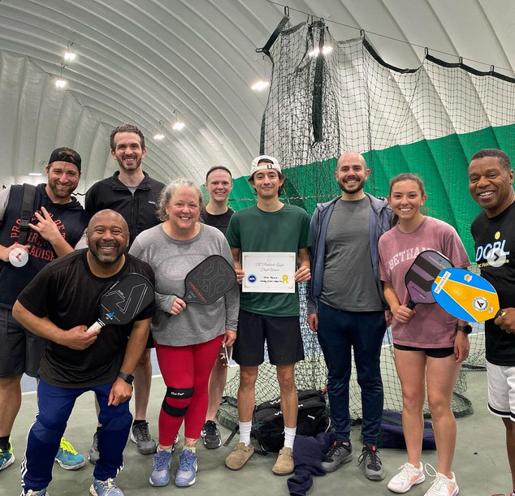

DC Pickleball League
The DC Pickleball League (DCPL) organizes pickleball fun in the Washington DC area! We welcome you to join our leagues, tournaments, clinics, and open play sessions. Be part of the vibrant DC pickleball community!
Join our mailing list for weekly updates
Upcoming DCPL events
Follow the links for more information or to register for each event. Email us at wdcpickleball@gmail.com with any questions.
- Aug. 21 - Sept. 18, Thursday Outdoor League at Anacostia, 5 weeks, 5:30pm-8:00pm.
- Aug. 25 - Sep. 29, Monday Social League at Rock Creek Tennis Center, 6 weeks, 5:30-7:15pm.
- Aug. 25 - Sep. 29, Monday Competitive League at Rock Creek Tennis Center, 6 weeks, 7:15-10:00pm.
- Aug. 27 - Oct. 1, Wednesday Social League at Rock Creek Tennis Center, 6 weeks, 5:30-7:15pm.
- Aug. 27 - Oct. 1, Wednesday Competitive League at Rock Creek Tennis Center, 6 weeks, 7:15-10:00pm.
- Sept. 13, DCPL National Mall Qualifier Challenge tournament at Anacostia (register)
- Sep. 15, Monday Clinics for Beginners & Adv. Beginners at Bridge District, 6:00pm-7:30pm.
- Sep. 17, Wednesday Low Intermediate and above (3.2 - 3.5) Clinic & Drill Session at Bridge District, 6:00pm-7:30pm.
- Sep. 19 - Oct. 17, Friday Indoor Leagues at WTEF, 5 weeks, 6:30pm-9:30pm.
- Sep. 20, Saturday Clinics for Beginners & Adv. Beginners (up tp 3.0) at Bridge District, 9:00am-10:30am.
- Sep. 20, Saturday Low Intermediate and above (3.2 - 3.5) Clinic & Drill Session at Bridge District, 10:30am-11:45am.
- Sep. 21, Sunday Clinics for Beginners & Adv. Beginners at Rock Creek, 9:30-10:45am.
- Sep. 21, Sunday Open Play at Rock Creek, 9:00am-12:00pm.
- Sep. 19 - Oct. 17, Friday Indoor Leagues at WTEF, 5 weeks, 6:30pm-9:30pm.
Current Ladder League Standings
Ladder standings are updated approximately 72 hours after each day's play. Last updated September 7.- Monday Social League (5:30pm) Ladder
- Monday Competitive League (7:15pm) Ladder
- Tuesday Indoor League (6:00pm) Ladder
- Wednesday Social League (5:30pm) Ladder
- Wednesday Competitive League (7:15pm) Ladder
- Thursday Anacostia League (5:30pm) Ladder
- National Mall Qualifier Challenge tournament at Anacostia
Summer (June/July) Ladder League Standings
Ladder standings are updated approximately 72 hours after each day's play. Last updated July 30.- Monday Ladder League (5:30pm) Ladder
- Tuesday Indoor Ladder League (6:00pm) Ladder
- Wednesday Ladder League (5:30pm) Ladder
- Juneteenth Tournament Results
Spring (May/June) 2025 Ladder League Standings
- Monday Social League (5:30pm) Ladder
- Monday Competitive League (7:15pm) Ladder
- Wednesday Social League (5:30pm) Ladder
- Wednesday Competitive League (7:15pm) Ladder
- Saturday Social/Competitive League (4:20pm) Ladder
- Combined Wed/Sat League (7:00pm makeup) Ladder
- Juneteenth Tournament Results
Previous Ladder League Standings
- Spring 2025 (Mar/Apr) Ladder League Standings
- February 2025 Ladder League Standings
- January 2025 Ladder League Standings
- All 2024 Ladder League Standings
- All 2023 Ladder League Standings
Skill Level Self-Assessment Resources
We will soon release the DCPL skill level and rating assessments. Until then, use these resources to self-assess your skill level (on a 1.0 to 5.0 scale) if you are new to our events and need a preliminary rating:Ladder Leagues
DC Pickleball League is offering our next multi-week ladder leagues beginning August 21 (Thursday league at Anacostia Park), August 25 (Monday league at Rock Creek), and August 27 (Wednesday league at Rock Creek). For more information, contact us at dcpickleballleague@gmail.com, or register using the links at the top of this page. Our shootout ladder leagues are designed for you to play multiple games with players of similar skill level in a fun and competitive environment while climbing up the ladder as you improve across the season!
{kind=link}
We offer both "Social" leagues and "Competitive" leagues according to your interests. The Social leagues are intended for advanced beginners and low intermediate players (2.5-3.3 skill level) and consist of a one hour "shootout" round-robin session amongst 4-5 players, plus 30 minutes of open play each week. The Competitive leagues are for intermediate and advanced players (3.4-5.0+ skill level) and consist of a two-hour, double round-robin format plus 45 minutes of open play each week.
Ladder league rankings are updated each week based on your performance in the round-robin events. As you play each week, your ladder ranking will become more accurate, and your matches more competitive.
While our leagues focus on doubles pickleball play, you do not need a partner, and there is no need for a substitute if you miss a week! One of the benefits of our shootout ladder league format is that players can miss a week and not be punished in their ladder ranking -- not that anyone would miss a week of fun, right?
Lessons & Clinics
 Whether you are a beginner, intermediate, or advanced amateur player, we offer lessons and clinics tailored to your skill level and needs.
Our lessons and clinics are taught by our Certified Coach Steve Valiant. Steve
has been playing in pickleball tournaments and winning medals across the U.S. for more than 10 years. He has helped hundreds of beginners and more advanced
players to play effectively in recreational and tournament play. His knowledge, patience, and encouragement will help you to improve your game.
Whether you are a beginner, intermediate, or advanced amateur player, we offer lessons and clinics tailored to your skill level and needs.
Our lessons and clinics are taught by our Certified Coach Steve Valiant. Steve
has been playing in pickleball tournaments and winning medals across the U.S. for more than 10 years. He has helped hundreds of beginners and more advanced
players to play effectively in recreational and tournament play. His knowledge, patience, and encouragement will help you to improve your game.
Introductory and intermediate-level classes and clinics are offered at several outdoor DC courts, weather permitting. Private and semi-private lessons are also available throughout the week. To sign up for any of these offerings, please email wdcpickleball@gmail.com. Steve and his colleague Maya Ben-David will schedule you for one of the upcoming sessions or arrange a convenient lesson time. Bring your paddle, if you have one, or borrow one from us for the lesson!
We hope to see you on the pickleball court!
Contact Us
Contact us via email at wdcpickleball@gmail.com. If you'd like to be added to our weekly email update list, submit this form.Our website: https://wdcpickleball.com/
Our Instagram: instagram.com/dcpickleballleague
Our events take place at these venues:
Rock Creek Tennis Center
5220 16th St NW, Washington, DC 20011
Anacostia Recreation Center Tennis Courts
1800 Anacostia Dr, Washington, DC 20020
Washington Tennis & Education Foundation
200 Stoddert Pl, Washington, DC 20019